Overview
Every board tile is an icon needing four season states (spring → summer → autumn → winter; no winter→spring — a run ends at winter, the next starts fresh), with forward transition animations and per-season idles. As the in-game season advances, the tile animates to the next.
Core principle
Constant identity
Same trunk/silhouette/pad/footprint every season. A player must recognize the tile at a glance, always.
Seasonal dressing
Season lives in color, the ground pad, the light, and overlays (blossom, fallen leaves, frost, snow) — bold is fine (a willow may go fully bare) as long as identity persists.
The earlier attempt treated season as a lifecycle (sprout→growth→harvest→dead stalk): every season a different object, nothing to anchor consistency to, and unrecognizable by winter. That was the root cause of the inconsistency. This system replaces it.
Key decisions
| Decision | Choice | Why |
|---|---|---|
| Style & resolution | 128px illustrated, downscaled for display | A 6×6 mobile tile is ~120–180 physical px on retina, so 64px upscales soft; 128px is crisp and tweens cleanly. 256px is ~16× the texture memory — ruled out for the full animated set; 64px nearest-neighbor stays sharp but reads chunky and tweens poorly. |
| API | Raw PixelLab v2 REST (not the MCP object tools) | The object API is a project-side abstraction (auto-deletes 8h) and create_object_state can only branch off the base object — cannot chain seasons. Raw edit-images-v2 takes any source PNG → true chaining. |
| Season meaning | Constant subject + dressing | Board recognizability + a stable identity to anchor consistency. |
| Generation anchor | Summer (peak), edit outward | Richest base frame; edits stay registered for animation. Spring/Autumn edit from Summer; Winter chains from Autumn (via a bare-mound hinge for trees). |
| Produce seasons | Ripeness arc + props | Reads seasonal while staying obviously the same tile. |
| Consistency mechanism | Style-anchor image + chained edits | Tight prompts; the anchor + edit chain carry the look. Validated: grass/eggplant generated from the willow anchor came back stylistically consistent. |
| Footprint | Shared subject envelope (~75% height on a common pad) | Small subjects scale up, wide subjects mound up; every category fills the same visual space. |
| Candidate indexing | 0-based | Filenames and all references are 0-based (user-facing viewers may number 1-based — bake the index into contact sheets to avoid the off-by-one). |
Generation flow
Every still is registered to the anchor's pad, so adjacent frames tween cleanly. Non-tree subjects skip the bare-mound hinge (Winter edits directly from Autumn).
style_images (128px lets us afford two): willow-summer.png (organic mass + pad + foliage cel-shading) and eggplant-summer.png (single hero object scaled-to-fill + glossy shading + pad). They span the two dominant subject archetypes, so the whole set inherits one consistent look. Swap or extend the pair as the set matures.Raw v2 endpoints (the real schema)
Base https://api.pixellab.ai/v2. Auth: Authorization: Bearer <token> — the token is the same one the pixellab http-MCP uses, read at runtime from ~/.claude.json (never printed/committed). All three are async: POST returns a job id, then poll GET /background-jobs/{id} until terminal; images arrive base64 in last_response.images (a parallel quantized_images set exists — we keep the smoother images).
| Endpoint | Key body fields | Returns |
|---|---|---|
POST /generate-with-style-v2 | style_images:[{image:{type:"base64",base64,format:"png"}, width, height}], description, image_size:{width,height} (square 16–512), no_background (default true), style_description?, seed? | 4 candidates in images[] |
POST /edit-images-v2 | method:"edit_with_text", edit_images:[{image:{base64…}, width, height}], image_size (32–512), description, no_background (default false → we set true), seed? | 1 image (chainable: source = any PNG) |
POST /animate-with-text-v3 | first_frame:{type,base64,format}, last_frame? (start+end interpolation), action, frame_count (4/8/16, default 8), seed (default 0), no_background | frame_count+1 frames in images[] |
GET /background-jobs/{id} | — | {id,status,created_at,last_response:{images,quantized_images,usage_cost_usd,seed,…}} |
Pipeline code (tools/pixellab/)
| File | What it does |
|---|---|
pixellab.mjs | Node ESM, zero-dep (global fetch). Exports generateWithStyle / editWithText / animateTransition + POST/poll(540s)/save. Reads token from ~/.claude.json (or PIXELLAB_TOKEN). PNG dims parsed from IHDR. CLI: node tools/pixellab/pixellab.mjs <gen|edit|anim> --flags. Driven in-session via node --input-type=module <<EOF … import(pathToFileURL(cwd+'/tools/pixellab/pixellab.mjs')) … EOF. |
check_pad.py | Pad-alignment QA gate. Measures pad bottom-row / width / center-x from the alpha silhouette, with width & center taken as a median over the bottom --band rows (default 5, the bare ground rim) so base props don't skew it; SHIFT (auto-realign with --fix) for position drift, REJECT for width drift. python tools/pixellab/check_pad.py --ref REF --check A B … [--fix]. |
| GIF assembly | Inline Python/Pillow (no ffmpeg/ImageMagick on this box; Windows convert is the disk tool — never call it). Composite frames on board bg #d7e7c0, 3× nearest upscale → looping GIF + a horizontal frame strip for static auditing. Python at /c/Python314, Pillow 12.2. |
--band rows (default 5, the bare ground rim) — where leaf-mounds, snow-piles and fallen fruit don't reach — instead of the single widest row. Willow autumn now reads identical to its summer anchor (width 40, cx 63.5, OK) instead of a false REJECT; grass autumn/winter surfaced a real +4px pad shift that --fix auto-corrected.Animation learnings
- Staging principle. Narrate a transition as a temporal sequence ("first… then… finally"), never simultaneous changes — that's what stopped falling-snow and falling-leaves from blending into mush.
- Two-segment transitions for complex morphs: insert a midpoint keyframe so the two effects never co-occur and each hop is shorter. Tree
autumn→winter=autumn→bare-mound(leaves fall & pile, no snow) +bare-mound→winter(snow falls, covers). - Interpolation artifacts are seed-dependent generation noise, not prompts — glowing-line fronds (willow foliage removal), white-glow overshoot on big color jumps, transient blue/icy pad. Fix order: re-roll seeds, pick clean → shorten hops with a midpoint keyframe → hand-fix in Aseprite (last resort). Example: willow
autumn→bareseed 0 glowed; seed 42 was clean. - Idles:
first_frame=last_frame=the season still,frame_count=8, loop; per-category motion vocabulary (still TODO to generate). - Transitions use
frame_count=16→ 17 frames each.
Still meta-prompt layers
Directional authoring spec; the text shipped to PixelLab is a tight distillation, with framing/style carried by the anchor image + fixed params (size 128, transparent, no_background:true).
- L0 Style anchor (image): the blessed Summer tile, passed as
style_imagesfor every other subject's Summer. - L1 Base/framing: 128² transparent; one round "diorama" pad bottom-center (~60% width, bottom row ≈119, width ≈85, cx ≈64 in the willow set); subject fills ~75%-height centered envelope; soft outline; flat cel-shading.
- L2 Season defs: Spring = soft cool light, new grass + blossoms/dew, pastel. Summer = warm midday, lush deep-green pad, saturated (anchor). Autumn = low golden light, amber-tan pad + fallen leaves, orange/gold. Winter = pale cool light, snow fully covering frozen ground, desaturated + blue shadows.
- L3 Category defs: Tree = trunk + canopy mass filling envelope. Groundcover = upright tussock mounding up. Produce = harvested item as a hero object scaled up on the pad (not the plant).
- L4 Category × season: see the tree lifecycle below; grass = fresh-green+flowers →lush+seedheads →golden-dry straw →pale flattened+frost/snow; produce(eggplant) = young matte purple+blossom →glossy ripe →dull overripe+fallen leaves →frost-shrivelled+snow on pad (ripeness in color/surface, footprint constant).
Deciduous tree lifecycle (refined)
Leaf-fall is a continuous arc across summer→autumn→winter, ending in a snow-covered mound:
| State | Look |
|---|---|
| Spring | fuller fresh spring-green canopy + pink/white blossom flecks; petals on pad. |
| Summer anchor | fuller lush dense green canopy. |
| Autumn | gold/amber canopy already thinning, a few leaves mid-fall around the tree, a small leaf mound starting at the base. |
| Bare-mound hinge | bare drooping branches over a full golden leaf mound, no snow. |
| Winter | bare branches + snow fully covering the ground, the leaf mound still visible as a snow-covered bump, snow on branches. |
Animation meta (across-season / category / subject)
- Across-season (transitions): spring→summer = lushen/deepen (no falling elements); summer→autumn = green→gold turning wave + first leaves loosen, mound begins; autumn→winter = staged shed (two-segment for trees).
- Within-category: Tree idle = slow canopy sway, fronds more than trunk, occasional drifting leaf (none in winter); transition change is in the canopy, trunk anchored. Grass idle = wind ripple. Produce idle = breathing bob + slow specular glint.
- Subject (willow): long drooping fronds sway pendulously; bare branches sway + loose snow drifts in winter.
Willow still prompts (as shipped)
Summer = generate-with-style-v2 (style = prior willow summer). The rest = edit-images-v2 / edit_with_text with an identity-lock prefix, chained as in the flow diagram.
Summer (fuller, generate):
Spring (edit ← summer):
Autumn (edit ← summer):
Bare-mound (edit ← autumn, which already carries the right leafy envelope):
Winter (edit ← bare-mound):
Willow transition actions (16 frames)
Idle loops (first=last=still, 8f → 9-frame seamless loop)
Meadow grass — full matrix
Same model as the willow: a generate-with-style-v2 Summer anchor (style = willow summer), then identity-lock edits. Non-tree → no bare-mound hinge; Spring/Autumn branch off Summer, Winter chains off Autumn.
Stills
Transitions (16f)
Eggplant — full matrix (ripeness arc + pad props)
Stills
Transitions (16f)
All tiles — first-pass prompt system
The board has ~85 tiles across 13 families (full list below). Rather than 85 bespoke prompts, the system composes each tile from meta-prompts: a season layer × a category playbook (lifecycle + idle + transition) × a one-line subject base. Only the subject base is written per tile; the season/category/idle/transition behaviour is shared. Generation still follows the summer-anchor → edit-chain flow with the two canonical style anchors.
Season meta (the 4 dressings)
Applied on top of every category. Identity stays constant; only these change.
| Season | Light | Ground pad | Palette & overlays |
|---|---|---|---|
| Spring | soft, cool, bright | fresh new green, a few tiny blossoms/dew | pastel, fresh; scattered petals/buds |
| Summer anchor | warm midday | lush deep green | richest saturation; the generated base |
| Autumn | low, golden | amber-tan, a few fallen leaves | gold/orange/rust; first leaves down |
| Winter | pale, cool, blue-shadowed | snow fully covering the ground | desaturated; frost, snow caps |
Category playbooks
How each family fills the tile, moves through the year, idles, and transitions. Living vegetation morphs; animals, minerals and objects stay constant and the season lives in the pad + light.
| Category | Fills tile as | Season lifecycle (Sp → Su → Au → Wi) | Idle | Forward transitions |
|---|---|---|---|---|
| Tree — deciduous oak, birch, willow | trunk + canopy mass | blossom-fresh green → lush dense → gold + thinning + leaf-mound begins → bare + snow-covered mound (bare-state lock: keep the bare crown within the summer envelope — branches must not grow, heighten or lengthen) | pendulous canopy sway, trunk anchored; autumn drifts a leaf; winter bare sway + loose snow | green→gold turning wave; staged shed — two-segment to winter (fall → bare-mound → snow) |
| Tree — evergreen fir, cypress, palm | conical / columnar needled mass | keeps foliage all year; season in pad + light; winter = snow-laden boughs, no shed/mound | slow bough dip + settle | mostly pad/light + snow accumulation; no leaf-fall (palm: soften winter to frosted fronds) |
| Grass / groundcover grass, meadow, spiky, heather | upright tussock mounding | fresh + tiny flowers → lush + seedheads → golden-dry straw → flattened + frost, snow pad | wind ripple across the blades | dry from the tips; flatten + snow (single segment ok) |
| Grain wheat, corn, buckwheat, manna, rice | stand of tall headed stalks | green shoots → ripe golden heads → dry, heavy, bowed → cut stubble under snow | stalk sway, heads nod | green→gold ripen + bow; cut-to-stubble + snow |
| Produce — veg carrot, eggplant… | the harvested item, scaled to fill (footprint constant) | ripeness in colour/surface: young/pale + blossom → peak glossy → overripe/dull + fallen leaves → frost-touched + snow pad | gentle breathing bob + slow specular glint | ripen/dull recolour + pad-prop swap (blossom → leaves → snow) |
| Produce — fruit apple, pear… | the fruit (+ stem/leaf), scaled to fill | blossom/under-ripe → ripe → very ripe + a spot + leaves → frosted + snow pad | bob + glint, slight stem bounce | ripen recolour + pad props |
| Flower pansy, water lily | the bloom on its pad | bud opening → full open → fading + seed head → dormant/dried under snow | gentle petal sway + bob | bud → open → wilt → snow |
| Bird chicken, rooster… | the bird standing on the pad | creature constant; season = pad + light + small accents (spring petals, autumn leaves, winter snow pad + optional fluff/breath-puff) | periodic: occasional peck, head-bob, tail-flick, blink — static between | no morph — pad/light cross-fade + a posture settle |
| Herd / cattle / mount pig, cow, horse… | the standing animal | constant; season = pad + light + a coat note (winter thicker/frosted, summer sleek); spring fresh pad, autumn leaves | periodic: weight-shift, tail-swish, ear-flick, breathing | pad/light + coat; no body morph |
| Mine / ore stone, gem, gold… | the rock/ore chunk on a stone pad | mineral constant (rock doesn't grow); season entirely on pad + light: mossy/damp → dry → a leaf or two → snow-dusted rock + icy pad | periodic + minimal: a faint gem/gold glint; plain rock is static | pad/light + frost only; ore unchanged |
| Fish / aquatic sardine, clam, kelp, giant pearl | the fish/shell on a water pad | season on the water + light: fresh → bright → leaves floating → icy/partly-frozen + snow rim | gentle bob / fin-flutter + water shimmer (may be continuous) | water-pad recolour + ice forming |
| Special dirt, golden coin | soil mound / a constant object | dirt: sprouts → rich dry-cracked → leaves → frosted. coin/pearl: object constant, season on pad + light only | dirt: faint settle; coin: slow shine glint | pad/light driven |
tile_bird_clover (a four-leaf clover) and tile_bird_melon (a watermelon) sit in the bird family in constants.ts but are a plant and a produce item — their art should follow the groundcover/produce playbooks, not bird. (Matches the earlier parity note.)Per-subject summer bases
One line each — the subject identity for the generated Summer anchor (style = the two canonical anchors). Seasons/idle/transition follow the category playbook above unless noted. All prefixed implicitly with the framing meta (128², transparent, small round pad, ~75%-height centered envelope).
Trees tree
| Tile | Summer base |
|---|---|
| Oak | a broad oak with a rounded dense leafy canopy and a thick sturdy trunk, on a small round grassy pad, summer |
| Birch | a slender birch with a light airy canopy and a white black-flecked trunk, on a small round grassy pad, summer |
| Willow done | a willow with a very full dense weeping canopy and a short sturdy brown trunk, on a small round grassy pad, summer |
| Fir evergreen | a tall conical fir with layered dark-green needled boughs and a straight trunk, on a small round grassy pad, summer |
| Cypress evergreen | a tall narrow cypress column of dense dark foliage, on a small round grassy pad, summer |
| Palm evergreen | a palm with a curved trunk and a crown of long arching fronds, on a small round sandy-grass pad, summer |
Grass / groundcover grass
| Tile | Summer base |
|---|---|
| Grass | a rounded tussock of ordinary green grass blades, on a small round grassy pad, summer |
| Meadow Grass done | a rounded tussock of tall lush meadow grass with a few seed heads, on a small round grassy pad, summer |
| Spiky Grass | a clump of stiff upright spiky blue-green grass blades, on a small round grassy pad, summer |
| Heather | a low mound of heather with tiny purple flower spikes, on a small round grassy pad, summer |
Grain grain
| Tile | Summer base |
|---|---|
| Wheat | a sheaf of tall golden wheat stalks with bearded heads, on a small round soil pad, summer |
| Corn | a pair of tall corn stalks with broad leaves and a ripe cob, on a small round soil pad, summer |
| Buckwheat | a cluster of slender buckwheat stalks with small white flower heads, on a small round soil pad, summer |
| Manna | a stand of pale wispy manna grass with soft seed plumes, on a small round soil pad, summer |
| Rice | a clump of green rice stalks with drooping grain heads, on a small round flooded-soil pad, summer |
Vegetables veg · ripeness arc
| Tile | Summer base |
|---|---|
| Carrot | a single large orange carrot with a leafy green top, resting on a small round grassy pad, summer |
| Eggplant done | a single large glossy deep-purple eggplant with a green calyx, resting on a small round grassy pad, summer |
| Turnip | a single round white-and-purple turnip with leafy greens, on a small round grassy pad, summer |
| Beet | a single deep-red beet with crinkled red-veined greens, on a small round grassy pad, summer |
| Cucumber | a single long green ridged cucumber, resting on a small round grassy pad, summer |
| Squash | a single plump ribbed yellow squash, on a small round grassy pad, summer |
| Mushroom | a single large red-capped white-spotted mushroom, on a small round mossy pad, summer |
| Pepper | a single glossy red bell pepper with a green stem, on a small round grassy pad, summer |
| Broccoli | a single bushy green broccoli crown on a thick stalk, on a small round grassy pad, summer |
Fruit fruit · ripeness arc
| Tile | Summer base |
|---|---|
| Apple | a single round red apple with a small leaf and stem, on a small round grassy pad, summer |
| Pear | a single green-gold pear with a short stem and a leaf, on a small round grassy pad, summer |
| Golden Apple | a single radiant golden apple with a gold-tinted leaf, on a small round grassy pad, summer |
| Blackberry | a cluster of dark glossy blackberries on a thorny sprig, on a small round grassy pad, summer |
| Rambutan | a single red hairy-spined rambutan, on a small round grassy pad, summer |
| Starfruit | a single ridged yellow starfruit with one cross-cut star showing, on a small round grassy pad, summer |
| Coconut | a single brown husked coconut, on a small round sandy pad, summer |
| Lemon | a single bright-yellow lemon with a leaf, on a small round grassy pad, summer |
| Jackfruit | a single large green knobbly jackfruit, on a small round grassy pad, summer |
Flowers flower
| Tile | Summer base |
|---|---|
| Pansy | a small cluster of purple-and-yellow pansy blooms, on a small round grassy pad, summer |
| Water Lily | a pink water-lily blossom with flat green lily pads, on a small round water pad, summer |
Birds animal · periodic idle
| Tile | Summer base |
|---|---|
| Pheasant | a plump long-tailed pheasant with coppery plumage, standing on a small round grassy pad, summer |
| Chicken done · 64px | a small plump white-and-cream chicken with a tiny red comb and orange beak, on a small round grassy pad, summer (validated at 64px; animal palette-lock) |
| Hen | a brown speckled hen, on a small round grassy pad, summer |
| Rooster | a proud red-combed rooster with arched tail feathers, on a small round grassy pad, summer |
| Wild Goose | a grey-brown wild goose, on a small round grassy pad, summer |
| Goose | a plump white domestic goose, on a small round grassy pad, summer |
| Parrot | a bright red-and-green parrot, on a small round grassy pad, summer |
| Phoenix | a fiery orange-gold phoenix with flame-tipped tail feathers, on a small round grassy pad, summer |
| Dodo | a round grey-brown dodo with a big hooked beak, on a small round grassy pad, summer |
| Pig in Disguise | a pink pig wearing a feathered bird costume, on a small round grassy pad, summer |
| Turkey | a fanned-tail brown turkey with a red wattle, on a small round grassy pad, summer |
| Clover mis-filed | a lucky four-leaf clover sprig (treat as groundcover, not bird), on a small round grassy pad, summer |
| Melon mis-filed | a round green-striped watermelon (treat as produce, not bird), on a small round grassy pad, summer |
Herd · Cattle · Mounts animal · periodic idle
| Tile | Summer base |
|---|---|
| Pig | a pink standing pig, on a small round grassy pad, summer |
| Hog | a bristly brown hog with small tusks, on a small round grassy pad, summer |
| Boar | a dark shaggy wild boar with curved tusks, on a small round grassy pad, summer |
| Warthog | a grey warthog with warts and upward tusks, on a small round grassy pad, summer |
| Sheep | a fluffy white woolly sheep, on a small round grassy pad, summer |
| Alpaca | a fluffy tan alpaca with a long neck, on a small round grassy pad, summer |
| Goat | a white-and-brown goat with small horns, on a small round grassy pad, summer |
| Ram | a sturdy ram with thick curled horns, on a small round grassy pad, summer |
| Cow | a black-and-white spotted cow, on a small round grassy pad, summer |
| Longhorn | a tan longhorn steer with wide horns, on a small round grassy pad, summer |
| Triceratops | a green triceratops with three horns and a neck frill, on a small round grassy pad, summer |
| Horse | a brown horse with a flowing mane, on a small round grassy pad, summer |
| Donkey | a small grey donkey with long ears, on a small round grassy pad, summer |
| Moose | a large brown moose with broad flat antlers, on a small round grassy pad, summer |
| Mammoth | a shaggy brown woolly mammoth with curved tusks, on a small round grassy pad, summer |
Mine / ore mineral · pad-only season
| Tile | Summer base |
|---|---|
| Stone | a rough grey stone boulder, on a small round rocky pad, summer |
| Iron Ore | a grey rock veined with rusty iron ore, on a small round rocky pad, summer |
| Copper Ore | a grey rock veined with green-blue copper ore, on a small round rocky pad, summer |
| Coal | a chunk of black glossy coal, on a small round rocky pad, summer |
| Gem | a faceted blue gem set in grey rock, on a small round rocky pad, summer |
| Gold | a grey rock veined with bright gold, on a small round rocky pad, summer |
Fish / aquatic water pad
| Tile | Summer base |
|---|---|
| Sardine | a small silver sardine, on a small round water pad, summer |
| Mackerel | a striped blue-green mackerel, on a small round water pad, summer |
| Clam | a ridged clam shell slightly open, on a small round water pad, summer |
| Oyster | a rough oyster shell with a pearl glimpse inside, on a small round water pad, summer |
| Kelp | a frond of green-brown kelp, on a small round water pad, summer |
| Giant Pearl special | a large lustrous pearl resting in an open shell, on a small round water pad, summer |
Special special
| Tile | Summer base |
|---|---|
| Dirt | a mound of dark fertile tilled soil, on a small round earth pad, summer |
| Golden Coin | a single bright gold coin standing on edge (constant; season on pad + light only), on a small round grassy pad, summer |
Validated end to end
Willow deciduous tree
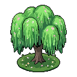
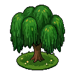
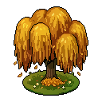
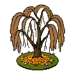
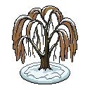

Full-year loop + the two-segment fall→winter strip (leaves pile, then snow covers the mound). Per-transition GIFs: willow-{spring-summer,summer-autumn,autumn-baremound,baremound-winter}.gif.
Per-season idle loops — rest → gentle sway → rest (seamless, so they play continuously or periodically):
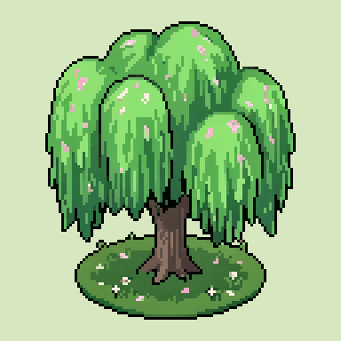
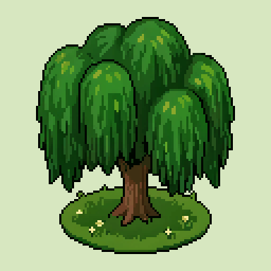
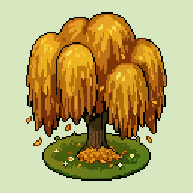
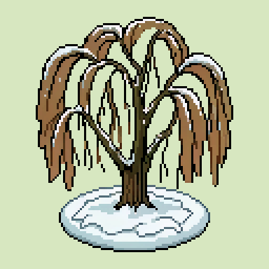
Meadow grass groundcover
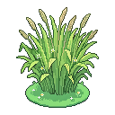
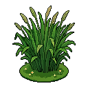
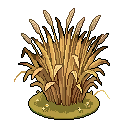
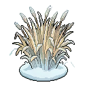
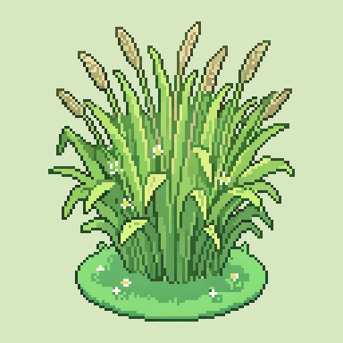
Eggplant produce · ripeness arc
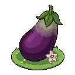
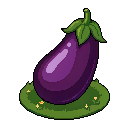
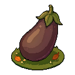
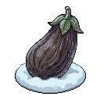
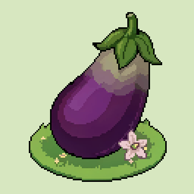
Year loops = the 3 forward transitions concatenated (51 frames). First-pass polish flags: eggplant spring shoulder reads slightly grey, and eggplant-autumn-winter flashes white frost before settling to the darker winter still — both seed re-rolls if wanted.
Chicken animal · 64px
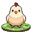
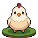
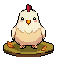
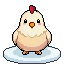
The animal playbook at 64px (a resolution test): the chicken is held constant across all four seasons — the season lives entirely in the pad + light (flowers → green → leaves → snow), with a periodic peck/head-bob idle (winter adds a breath-puff). 64px holds up cleanly. A test-surfaced fix: the seasonal light recoloured the whole bird (autumn went orange) until the edit explicitly locked the creature's palette and lit the ground only — now baked into the animal playbook.
Engine integration — willow + chicken live in-game
The willow (tile_tree_willow) now renders its baked seasonal art on the real board, verified in the running game (typecheck + lint clean, clean boot, all 7 spritesheets serve 200). Below is the actual in-game tile texture captured per season — the rounded card chrome is the game's, the art is ours:
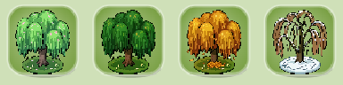
Season selection verified by the rendered canopy colour: Spring rgb(100,173,90) → Summer rgb(40,99,29) → Autumn rgb(180,120,25) → Winter rgb(111,126,91). The procedural fallback is season-identical, so four distinct, season-correct colours prove the PNG path + season pick are both working.
And the same path, generalized to a registry, renders the chicken (a 64px animal) per season — here the bird stays constant and the pad carries the season:

How it hooks in
A registry controller src/textures/seasonal/seasonalArt.ts maps each tile key to its public/seasonal-tiles/<subject>/ sheets and exposes paintSeasonalArt(ctx, key, season, t) with per-subject state. The shared painter paintTileCanvas draws it for any registered key once loaded; the per-frame loop (_animateSeasonalTiles, ~20fps) repaints the texture so the idle plays; the controller self-detects season changes and plays the forward transition once, then resumes the idle. Add a subject = drop its sheets + one registry entry.
Touched files
seasonalArt.ts (the registry controller, renamed from willowArt); textures.ts (registered-key branch + static rebake); GameScene.ts (preload-all, animate-loop inclusion, reduced-motion bake of all baked tiles); TileObj.ts (skip the sprite-angle sway for baked keys). Falls back to the procedural icon until art loads; unregistered tiles are untouched.
Build status
| Item | Status | Notes |
|---|---|---|
| Raw v2 pipeline + auth | done | tools/pixellab/pixellab.mjs; token from ~/.claude.json. |
| Pad-alignment QA gate | done | check_pad.py — bottom-band metric; mound false-positive resolved. |
| Willow stills (5) | done | fuller canopy, leaf-mound lifecycle, pad-aligned. |
| Willow transitions (4 clips) | done | two-segment fall→winter, glow-free (seed 42). |
| Grass + Eggplant summer | done | generated from anchor; set consistent. |
| QA metric refine (mound) | done | bottom-band median (--band 5); willow set reads identical, grass +4 shift auto-fixed. |
| Grass + Eggplant seasons + transitions | done | 4 stills + 3 transition clips each; pad-registered. |
| Chicken (animal, 64px) | done | 4 stills + 3 transitions + 4 idles; animal palette-lock; packed + integrated + verified in-game. |
| Willow idles (4) | done | per-season seamless micro-loops (first=last, 8f); continuous-vs-periodic playback is an engine choice. |
| Idle glow-frame fix | done | dropped the overshoot frame (07) from the spring + autumn idle loops; verified flat luminance. |
| Winter mound pop | dropped | Prototype (leaf-tips through snow) rejected — kept the original snow-mound winter. |
| All-tile prompts (first pass) | draft | meta-prompts (season/category/idle/transition) + per-subject summer bases for all ~85 tiles — see the All tiles tab. NOT final; evaluate against generated output. |
| Engine integration (registry) | done | seasonalArt.ts registry + paintTileCanvas hook; willow + chicken both verified in-game. Add a subject = sheets + one entry. |
| Roll-out: other subjects | later | generate per the first-pass prompts; reuse the same engine hook. |
Asset inventory
In-repo (version-controlled alongside the doc) — docs/seasonal-tile-system/assets/, canonical only:
- Stills (13):
willow-{spring,summer,autumn,baremound,winter}.png,grass-{spring,summer,autumn,winter}.png,eggplant-{spring,summer,autumn,winter}.png. - Animations:
anim/<subject>-<transition>/frame_00..16.png+ assembled.gif; two-segmentwillow-autumn-winter-full.gif; per-subject{willow,grass,eggplant}-fullyear.gif; willow idle loopswillow-idle-{spring,summer,autumn,winter}.gif. (Audit-strip.png+ montages live in the archive, not the repo.)
…\aiDev\puzzleDrag2-art-archive\seasonal-tiles\ (candidates/ · review/ · superseded-anim/) — kept for reference, never committed. New runs drop their rejects there, not in the repo.Gotchas (Windows / this box)
- Console is cp1252 — keep script
printoutput ASCII (a strayΔcrashes it). converton PATH is the Windows disk-format tool, NOT ImageMagick. Use Python/Pillow for GIFs.- Big edits (e.g. winter canopy removal) can exceed a 240s poll — pipeline timeout raised to 540s; re-poll a job by id instead of regenerating if a wrapper times out.
- Run node pipeline via the Bash tool with a
node --input-type=module <<'EOF'heredoc; it importspixellab.mjsby absolutefile://URL.